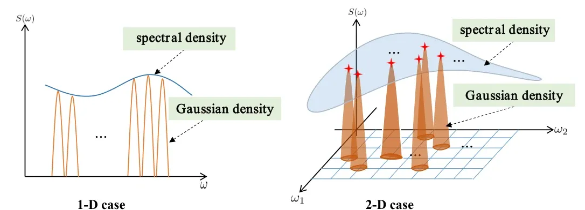
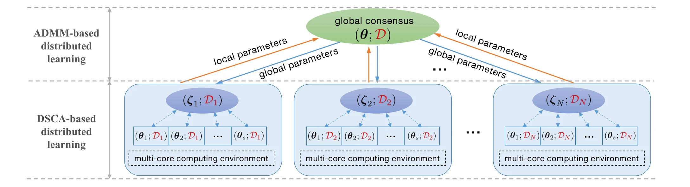
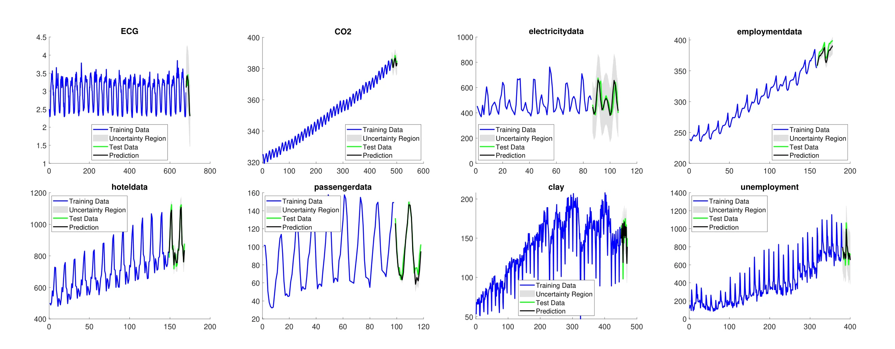
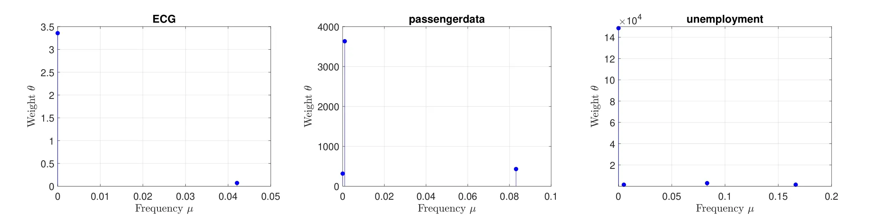

FUSION 2022
Gaussian Process Regression with Grid Spectral Mixture Kernel: Distributed Learning for Multidimensional Data
TL;DR. We introduce a grid spectral mixture kernel for multidimensional Gaussian processes and train it with distributed ADMM, so agents fit the kernel without sharing raw data.
Abstract
Kernel design for Gaussian processes (GPs) along with the associated hyper-parameter optimization is a challenging problem. In this paper, we propose a novel grid spectral mixture (GSM) kernel design for GPs that can automatically fit multidimensional data with affordable model complexity and superior modeling capability. To alleviate the computational complexity due to the curse of dimensionality, we leverage a multicore computing environment to optimize the kernel hyper-parameters in a distributed manner. We further propose a doubly distributed learning algorithm based on the alternating direction method of multipliers (ADMM) which enables multiple agents to learn the kernel hyper-parameters collaboratively. The doubly distributed learning algorithm is shown to be effective in reducing the overall computational complexity while preserving data privacy during the learning process. Experiments on various one-dimensional and multidimensional data sets demonstrate that the proposed kernel design yields superior training and prediction performance compared to its competitors.
Grid Spectral Mixture Kernel
Any stationary kernel k(τ) and its spectral density S(ω) are Fourier duals of each other 1. The spectral mixture (SM) kernel 2 exploits this duality by approximating S(ω) with a Gaussian mixture whose means, variances, and weights are all optimized from data, at the cost of a non-convex fit. The grid spectral mixture (GSM) kernel 34 instead fixes the mixture's means and variances to a preselected grid of points and optimizes only the mixture weights θ. Because the resulting kernel is linear in θ, fitting it becomes a difference-of-convex program that admits a global upper-bound surrogate, unlike the SM kernel's fully non-convex objective.
The original GSM kernel only handles one-dimensional inputs. This paper extends the construction to multidimensional inputs x ∈ Rdx by approximating the spectral density with Q isotropic multivariate Gaussians placed on a dx-dimensional grid, with frequencies sampled independently per dimension up to a Nyquist-derived cutoff. Taking the inverse Fourier transform of this spectral density gives a multidimensional GSM kernel that is still linear in its Q weights, so the convex surrogate used to fit the 1-D kernel carries over unchanged.

Figure 1. Basis kernel spectral density space under different input dimensions. In the 1-D case the spectral density is approximated by a sum of fixed Gaussian densities along a line; in the 2-D case the same idea places isotropic Gaussian densities on a two-dimensional grid of frequencies.
The grid construction is also the paper's main practical problem: sampling Q′ frequencies per dimension yields Q = Q′dx grid points, so the number of weights grows exponentially with dimension. Other automatic kernel-design approaches sidestep hand-combined kernels differently, via compositional kernel search over a discrete grammar5, functional kernel learning6, or hyperkernel optimization7, but fixing the grid is what keeps GSM's fitting convex and a distributed solution possible.
Distributed Learning via ADMM
Distributed SCA
Learning θ reduces to minimizing the negative marginal log-likelihood, a difference-of-convex objective. Successive convex approximation (SCA)8 solves this by linearizing the concave part and solving a sequence of convex surrogates, but a single surrogate over all Q weights still costs O(Qn3) per iteration. Distributed SCA (DSCA) partitions θ into s blocks with an additively separable surrogate, so each block updates in parallel on its own core at O((Q/s)n3) per iteration, followed by a global consensus step, converging under the same guarantee as vanilla SCA.
Doubly Distributed SCA
DSCA alone still needs every training point on one machine. To also keep data local, the problem is posed as an ADMM consensus problem over N agents, each holding a private dataset Dj and a local copy ζj of the weights, tied to a shared global θ by the constraint ζj = θ9. The doubly distributed SCA (D²SCA) algorithm combines this with DSCA: each agent solves its own now-convex local ADMM subproblem across its own cores, and the agents' local weights and scaled dual variables are averaged into the next global consensus θ. Only hyperparameters and dual variables cross agent boundaries, never the raw data Dj, and complexity drops to O(Qn3/(sN3)).
- Global consensus: average the local weights ζj and scaled dual variables λj across all N agents to obtain the global weights θ.
- Local update: in parallel, each agent refits its local weights ζj by running DSCA across its own s cores to solve its local ADMM subproblem against the current global θ.
- Dual update: each agent updates its dual variable λj from the gap between its local weights and the global consensus.
- Repeat the three steps until the primal and dual residuals fall below the stopping criteria.

Figure 2. Doubly distributed SCA (D²SCA). An ADMM consensus layer exchanges local and global hyperparameters with N agents; within each agent, DSCA further splits the local fit across an s-core computing environment.
Experiments
All experiments fit the GSM kernel-based GP (GSMGP) with Q = 500 grid frequencies sampled uniformly from the normalized frequency band [0, 1/2), a fixed variance vq = 0.001² per component, and weights initialized to zero and optimized by DSCA or D²SCA (N = 2 agents, s = 4 cores each on the 1-D datasets). Baselines are the spectral mixture kernel GP (SMGP)2, a squared-exponential kernel GP (SEGP)1, an LSTM10, and an ARIMA(5, 1, 2) model11, with SMGP and SEGP using the SM kernel authors' reference implementation and default optimizera.
One-Dimensional Data
On eight one-dimensional series (ECG, CO2, Electricity, Employment, Hotel, Passenger, Clay, and Unemployment), GSMGP-DSCA achieves the lowest prediction MSE on seven of the eight datasets, and GSMGP-D²SCA wins on the eighth, Electricity, where the ADMM consensus step evidently helps a local agent escape a bad local optimum. Every GSMGP variant beats SMGP, SEGP, LSTM, and ARIMA on every dataset, several by more than an order of magnitude.
| Data Set | GSMGP-DSCA | GSMGP-D²SCA | SMGP | SEGP | LSTM | ARIMA |
|---|---|---|---|---|---|---|
| ECG | 1.1E-02 | 1.2E-02 | 1.9E-02 | 1.6E-01 | 1.6E-01 | 1.8E-01 |
| CO2 | 9.2E-01 | 1.4E+00 | 1.1E+00 | 1.5E+03 | 2.9E+02 | 4.9E+00 |
| Electricity | 4.3E+03 | 3.6E+03 | 7.5E+03 | 8.3E+03 | 8.0E+03 | 1.2E+04 |
| Employment | 5.4E+01 | 7.0E+01 | 7.0E+02 | 8.4E+03 | 1.9E+03 | 3.9E+02 |
| Hotel | 4.2E+02 | 1.5E+03 | 2.8E+03 | 5.6E+04 | 5.0E+04 | 1.7E+04 |
| Passenger | 6.9E+01 | 1.1E+02 | 1.6E+02 | 8.8E+02 | 7.0E+02 | 4.5E+03 |
| Clay | 8.5E+01 | 2.4E+02 | 3.3E+02 | 1.5E+03 | 3.6E+02 | 3.3E+02 |
| Unemployment | 2.0E+03 | 3.1E+03 | 1.4E+04 | 5.6E+05 | 1.7E+05 | 1.5E+04 |
Table 1. Prediction MSE on the eight one-dimensional datasets. Bold marks the best result per row.

Figure 3. Training and prediction performance of GSMGP with σ = 0.001 and Q = 500 uniformly generated grid points, with weights optimized by DSCA, on the eight one-dimensional datasets.
The fitted weights are also sparse: DSCA leaves only 2, 3, 6, 16, 14, 30, 96, and 4 nonzero weights out of Q = 500 for the eight datasets respectively, so only the frequencies the data actually supports survive optimization, which makes the fitted kernel easier to interpret.

Figure 4. Estimated weights and their frequencies produced by DSCA for three representative datasets. Most of the 500 candidate grid frequencies receive zero weight.
Multidimensional Data
Four multidimensional regression tasks test the extended kernel: ALE (average localization error in wireless sensor node localization, dx = 4), CCCP (hourly electrical output of a combined-cycle power plant, dx = 4), Airfoil (self-noise at various wind-tunnel speeds and angles of attack, dx = 5), and Concrete (compressive strength from a mixture design, dx = 5). GSMGP uses Q = 1296 grid points for the two four-dimensional datasets and Q = 1024 for the two five-dimensional datasets, generated by the same per-dimension frequency sampling, and D²SCA splits training across N = 3 agents with s = 4 cores each.
Against SMGP, SEGP, and an LSTM, GSMGP-DSCA and GSMGP-D²SCA achieve the lowest prediction MSE on all four datasets, with D²SCA improving on DSCA for three of the four: ALE, CCCP, and Concrete. On CCCP in particular, SMGP's prediction MSE is roughly four orders of magnitude worse than GSMGP's, since the naive Gaussian-mixture spectral fit struggles once Q is large enough to encode a four-dimensional grid.
| Data Set | GSMGP-DSCA | GSMGP-D²SCA | SMGP | SEGP | LSTM |
|---|---|---|---|---|---|
| ALE | 2.4E-02 | 2.3E-02 | 3.8E-01 | 3.7E-02 | 3.4E-02 |
| CCCP | 1.9E+01 | 1.6E+01 | 2.1E+05 | 1.7E+01 | 2.8E+02 |
| Airfoil | 1.7E+01 | 5.2E+01 | 6.9E+01 | 7.7E+01 | 7.3E+01 |
| Concrete | 6.7E+01 | 4.0E+01 | 1.7E+03 | 1.3E+02 | 1.4E+02 |
Table 2. Prediction MSE on the four multidimensional datasets. Bold marks the best result per row.
The fitted weights stay sparse in the multidimensional case too, with 24, 12, 1, and 50 nonzero components respectively for ALE, CCCP, Airfoil, and Concrete out of the full grid. GSMGP also converges in far fewer iterations than its competitors, 3 to 7 iterations for GSMGP-DSCA and GSMGP-D²SCA against 63 to 500 for SMGP and SEGPb, because optimizing a convex surrogate at every step avoids the many restarts a non-convex gradient search needs.
Open Question
The grid spectral mixture kernel fits multidimensional data with fewer hyperparameters than a naive product of mixtures, which is a strong inductive bias if the spectrum really lives on that discrete lattice. Deriving why that structure is the right one, and when it approximates the covariance rather than merely interpolating it, remains open.
Citation
@inproceedings{suwandi2022gaussian,
title={Gaussian Process Regression with Grid Spectral Mixture Kernel: Distributed Learning for Multidimensional Data},
author={Suwandi, Richard Cornelius and Lin, Zhidi and Sun, Yiyong and Wang, Zhiguo and Cheng, Lei and Yin, Feng},
booktitle={25th International Conference on Information Fusion (FUSION)},
pages={1--8},
year={2022},
organization={IEEE}
}Footnotes
- SMGP and SEGP are run using the source code released on the SM kernel authors' web page (people.orie.cornell.edu/andrew/code/), with the number of Gaussian mixture components for SMGP matched to GSM's Q. [↩]
- SEGP, and SMGP on Airfoil and Concrete, hit the 500-iteration cap without converging, so their reported iteration counts likely understate how much longer a full convergence would take. [↩]
References
- Gaussian Processes for Machine Learning
Rasmussen, C.E. and Williams, C.K.I., 2006. Gaussian Processes for Machine Learning. MIT Press. - Gaussian process kernels for pattern discovery and extrapolation
Wilson, A. and Adams, R.P., 2013. Gaussian process kernels for pattern discovery and extrapolation. Proc. Int. Conf. Mach. Learn. (ICML), pp. 1067–1075. - Sparse structure enabled grid spectral mixture kernel for temporal Gaussian process regression
Yin, F., He, X., Pan, L., Chen, T., Luo, Z.-Q. and Theodoridis, S., 2018. Sparse structure enabled grid spectral mixture kernel for temporal Gaussian process regression. Proc. Int. Conf. Inf. Fusion (FUSION), pp. 47–54. - Linear multiple low-rank kernel based stationary Gaussian processes regression for time series
Yin, F., Pan, L., Chen, T., Theodoridis, S., Luo, Z.-Q. and Zoubir, A.M., 2020. Linear multiple low-rank kernel based stationary Gaussian processes regression for time series. IEEE Trans. Signal Process., 68, pp.5260–5275. - Structure discovery in nonparametric regression through compositional kernel search
Duvenaud, D., Lloyd, J.R., Grosse, R., Tenenbaum, J.B. and Ghahramani, Z., 2013. Structure discovery in nonparametric regression through compositional kernel search. Proc. Int. Conf. Mach. Learn. (ICML), pp. 1166–1174. - Function-space distributions over kernels
Benton, G., Maddox, W.J., Salkey, J.P., Albinati, J. and Wilson, A.G., 2019. Function-space distributions over kernels. Proc. Adv. Neural Inf. Process. Syst. (NeurIPS). - Kernel functional optimisation
Anjanapura Venkatesh, A.K., Shilton, A., Rana, S., Gupta, S. and Venkatesh, S., 2021. Kernel functional optimisation. Proc. Adv. Neural Inf. Process. Syst. (NeurIPS), 34. - Parallel and distributed successive convex approximation methods for big-data optimization
Scutari, G. and Sun, Y., 2018. Parallel and distributed successive convex approximation methods for big-data optimization. In Multi-agent Optimization, Springer, pp. 141–308. - Distributed optimization and statistical learning via the alternating direction method of multipliers
Boyd, S., Parikh, N., Chu, E., Peleato, B. and Eckstein, J., 2011. Distributed optimization and statistical learning via the alternating direction method of multipliers. Found. Trends Mach. Learn., 3(1), pp.1–122. - Long short-term memory
Hochreiter, S. and Schmidhuber, J., 1997. Long short-term memory. Neural Comput., 9(8), pp.1735–1780. - Application of the ARIMA model on the COVID-2019 epidemic dataset
Benvenuto, D., Giovanetti, M., Vassallo, L., Angeletti, S. and Ciccozzi, M., 2020. Application of the ARIMA model on the COVID-2019 epidemic dataset. Data in Brief, 29, p.105340.